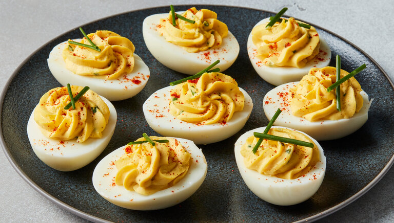

Home
Deviled Eggs

A classic appetizer made by stuffing hard-boiled egg whites with a creamy filling of mashed yolks and other ingredients.
Ingredients
- 6 large eggs
- 3 tablespoons mayonnaise
- 1 teaspoon Dijon mustard
- 1 teaspoon apple cider vinegar
- salt and pepper, to taste
- paprika, for garnish
Steps
- Bring a pot of water to a boil. Reduce the heat to stop the boil, then add eggs. Increase the heat back to high and set a timer for 14 minutes.
- Prepare an ice bath and set aside. After 14 minutes, remove the eggs from the water and place in the ice bath.
- Once the eggs have cooled, peel them and slice into halves lengthwise. Remove the yolk and add to a small bowl. Place the leftover egg whites on a plate.
- Mash the yolks with a fork and add mayonnaise, mustard, vinegar, salt and pepper. Stir until smooth.
- Use a spoon to add a portion of the mixture into each egg white. Sprinkle paprika to garnish, then serve!